전자계산기기사 (2014-09-20 기출문제)
1과목: 시스템 프로그래밍
1. 원시 프로그램을 컴파일러가 수행되고 있는 컴퓨터의 기계어로 번역하는 것이 아니라, 다른 기종에 맞는 기계어로 번역하는 것은?
- 디버거
- 인터프리터
- 프리프로세서
- 크로스 컴파일러
(정답률: 80%)

2. 이중(two) 패스 어셈블러를 사용하는 주된 이유는?
- 심볼이 정의되기 이전에 사용될 수 있기 때문에
- 어셈블러는 투 패스로만 사용해야 하기 때문에
- 어셈블러에 마크로 기능을 부여하기 위해서이다.
- 의사 연산(Pseudo operation)이 있기 때문이다.
(정답률: 78%)
3. 워킹 셋에 대한 설명으로 옳지 않은 것은?
- 프로세스가 실행되는 동안 주기억장치를 참조할 때 일부 페이지만 집중적으로 참조하는 성질을 의미한다.
- 프로세스가 일정 시간 동안 자주 참조하는 페이지들의 집합이다.
- 데닝이 제안한 것으로, 프로그램의 Locality 특징을 이용한다.
- 자주 참조되는 워킹 셋을 주기억장치에 상주시킴으로써 페이지 부재 및 페이지 교체 현상을 줄일 수 있다.
(정답률: 60%)
4. 어셈블리어 명령어 중 어떤 기호적 이름에 상수 값을 할당하는 것은?
- ORG
- EQU
- INCLUDE
- END
(정답률: 81%)
5. 절대 로더에서 연결(linking) 기능의 주체는?
- 프로그래머
- 컴파일러
- 로더
- 어셈블러
(정답률: 79%)
6. 프로세스의 정의로 옳지 않은 것은?
- PCB를 가진 프로그램
- 프로세서가 할당되는 실체
- 동기적 행위를 일으키는 주체
- 지정된 결과를 얻기 위한 일련의 계통적 동작
(정답률: 75%)
7. 링킹에 대한 설명으로 가장 적합한 것은?
- 실제적으로 기계 명령어와 자료를 기억 장소에 배치한다.
- 고급 언어로 작성된 원시 프로그램을 기계어로 변환한다.
- 프로그램들에 기억 장소 내의 공간을 할당한다.
- 목적 모듈간의 기호적 호출을 실제적인 주소로 변환
(정답률: 71%)
8. 운영체제(Operating System)에 대한 설명으로 옳지 않은 것은?
- 운영체제는 사용자와 컴퓨터 하드웨어 사이에 매개체 역할을 하는 시스템 소프트웨어이다.
- 운영체제는 컴퓨터 시스템에 항상 존재해야 하며 컴파일러, 문서편집기, 데이터베이스관리시스템 등의 프로그램을 내장하고 있다.
- 운영체제의 주 목적은 여러 컴퓨터 사용자가 서로 방해받지 않고 효율적으로 컴퓨터를 이용하도록 하는데 있다.
- 시스템의 각종 하드웨어와 네트워크를 관리, 제어한다.
(정답률: 70%)
9. 여러 개의 프로그램을 논리에 맞게 하나로 결합하여 실행 가능한 프로그램으로 만들어 주는 것은?
- Base register
- JCL
- Linkage editor
- Accumulator
(정답률: 77%)
10. 컴퓨터에서 프로그램 언어의 해독 순서를 바르게 나열한 것은?
- 컴파일러 → 링커 → 로더
- 로더 → 링커 → 컴파일러
- 컴파일러 → 로더 → 링커
- 링커 → 컴파일러 → 로더
(정답률: 79%)
11. 어셈블리어에 대한 설명으로 옳지 않은 것은?
- 어셈블리어로 작성한 원시 프로그램은 운영체제가 직접 어셈블 한다.
- 명령 기능을 쉽게 연상할 수 있는 기호를 기계어와 1:1로 대응시켜 코드화한 기호 언어이다.
- 어셈블리어의 기본 동작은 동일하지만 작성한 CPU마다 사용되는 어셈블리어가 다를 수 있다.
- 프로그램에 기호화된 명령 및 주소를 사용한다.
(정답률: 69%)
12. 서브루틴에서 자신을 호출한 곳으로 복귀시키는 어셈블리어 명령은?
- SUB
- MOV
- RET
- INT
(정답률: 83%)
13. HRN 스케줄링 기법에 대한 설명으로 옳지 않은 것은?
- 실행 시간이 긴 프로세스에 불리한 SJF 기법을 보완하기 위한 것으로, 대기 시간과 서비스 시간을 이용하는 기법이다.
- 우선순위를 계산하여 그 숫자가 가장 높은 것부터 낮은 순으로 우선순위가 부여된다.
- 우선순위 계산식은 {(대기시간+서비스시간)/대기시간}이다.
- 서비스 실행 시간이 짧거나 대기시간이 긴 프로세스의 경우 우선순위가 높아진다.
(정답률: 74%)
14. 프로그램 언어의 구문 형식을 정의하는 가장 보편적인 기법은?
- BNF
- Algorithm
- Procedure
- Flowchart
(정답률: 74%)
15. 시스템의 성능 평가 기준과 거리가 먼 것은?
- 처리 능력
- 구축 비용
- 반환 시간
- 신뢰도
(정답률: 82%)
16. 로더의 기능 중 목적 프로그램이 적재될 주기억장치 내의 공간을 확보하는 것은?
- allocation
- relocation
- loading
- linking
(정답률: 84%)
17. 로더의 종류 중 다음 설명에 해당하는 것은?
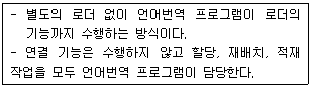
- 절대 로더
- Compile And Go 로더
- 직접 연결 로더
- 동적 적재 로더
(정답률: 75%)
18. 컴퓨터가 직접 이해할 수 있는 2진수 만으로 이루어진 언어를 의미하는 것은?
- assembly language
- high level language
- assembler
- machine language
(정답률: 70%)
19. 인터프리터 기법에 의해 프로그램을 수행하는 언어는?
- BASIC
- C
- PASCAL
- COBOL
(정답률: 64%)
20. 시스템 소프트웨어로 볼 수 없는 것은?
- 컴파일러
- 매크로 프로세서
- 로더
- 재고처리 프로그램
(정답률: 84%)
2과목: 전자계산기구조
21. 메모리에서 두 개의 데이터를 가져와서 연산하고 결과를 다시 메모리에 저장할 때 메모리에 한 번 접근하는데 1사이클, 연산하는데 1사이클 소요되고, 각각 4 클록씩 걸린다면 10[MHz]의 CPU에서 이 작업은 전부 몇 초가 걸리는가?
- 0.4μs
- 4μs
- 1.6μs
- 16μs
(정답률: 63%)
22. 병렬 처리기 등에서 PE(processing element)라고 불리는 다수의 연산기능을 갖는 동기적 병렬처리 방식은 무엇인가?
- 다중 처리기(multi processor)
- 시그마 처리기(sigma processor)
- 병렬 처리기(array processor)
- 파이프라인 처리기(pipelined processor)
(정답률: 42%)
23. 입출력 장치와 주기억 장치 사이에 자료 전달을 위한 송수신 회선은?
- 내부 버스
- 외부 버스
- Channel 제어기
- DMA 제어기
(정답률: 39%)
24. Associative 기억장치에 사용되는 기본요소가 아닌 것은?
- 일치 지시기
- 마스크 레지스터
- 인덱스 레지스터
- 검색 데이터 레지스터
(정답률: 26%)
25. 동시에 양쪽 방향으로 전송이 가능한 전송 방식은?
- Simplex
- Half-duplex
- Full-duplex
- on-line
(정답률: 82%)
26. 인터럽트 비트(interrupt bits) 10010과 마스크 비트(mask bits) 01110을 상호 AND 하였을 때의 출력 비트는?
- 11100
- 00011
- 11101
- 00010
(정답률: 74%)
27. 명령어에서 실행할 동작 부분을 나타내는 연산자(op code)의 기능과 관련없는 것은?
- 함수연산 기능
- 입출력 기능
- 제어 기능
- 주소지정 기능
(정답률: 39%)
28. 0-주소 명령 형식에 필요한 것은?
- stack
- index register
- queue
- base register
(정답률: 75%)
29. CPU 또는 메모리와 입출력장치의 속도 차이에서 오는 성능저하를 극복하기 위한 방법이 아닌 것은?
- 버퍼
- 채널
- 오프라인
- DMA
(정답률: 65%)
30. 입ㆍ출력에 필요한 하드웨어 기능으로 적합하지 않은 것은?
- I/O bus
- I/O interface
- DMA controller
- VPN
(정답률: 77%)
31. 타이머(timer)에 의하여 발생되는 인터럽트(interrupt)는 어디에 해당되는가?
- I/O 인터럽트
- 프로그램 인터럽트
- 외부(external) 인터럽트
- 기계 착오(machine check) 인터럽트
(정답률: 54%)
32. ROM 칩에 필요하지 않은 신호는?
- 쓰기 신호
- 주소
- 읽기 신호
- 칩 선택 신호
(정답률: 68%)
33. 소형계산기(calculator)에서 BCD 코드 대신 excess-3 코드를 많이 사용하는 이유는?
- 에러 검출이 쉽다.
- 연속된 수간에 하나의 비트만 변화한다.
- 그래픽 기호의 표현이 용이하다.
- 자기 보수가 가능하다.
(정답률: 57%)
34. 레코드(record)의 삽입(Insertion)이나 삭제(Deletion)가 빈번할 때 가장 적합한 데이터 구조는?
- Array 구조
- 계층 구조
- Binary Tree 구조
- Linked list 구조
(정답률: 48%)
35. 그레이 코드에 대한 설명으로 옳지 않은 것은?
- 자기 보수의 특성을 가지고 있다.
- 가중치를 갖지 않는 코드이다.
- 코드 변환을 위해 XOR 게이트를 사용한다.
- 아날로그/디지털 변환기를 제어하는 코드에 사용된다.
(정답률: 42%)
36. 2진수 (1011)2을 Gray code로 변환하면?
- 1001
- 1100
- 1111
- 1110
(정답률: 70%)
37. 시프트 레지스터(shift register)의 내용을 오른쪽으로 한 번 시프트하면 데이터는 어떻게 변하는가?
- 기존 데이터의 0.5배
- 기존 데이터의 0.25배
- 기존 데이터의 2배
- 기존 데이터의 4배
(정답률: 56%)
38. 중앙처리장치의 속도와 주기억장치의 속도의 차이가 현저할 때 인스트럭션의 수행 속도를 빠르게 하는 것으로 가장 빠른 접근 시간(access time)을 갖는 기억소자는?
- 보조 메모리(Auxiliary memory)
- 가상 메모리(Virtual memory)
- 캐시 메모리(Cache memory)
- 주기억 장치(Main memory)
(정답률: 78%)
39. 자기 코어(core) 기억장치에서 1word가 16bit로 되어있다면 몇 장의 코어 플랜(core plane)이 필요한가?
- 4장
- 8장
- 16장
- 1장
(정답률: 36%)
40. 다음 ( ) 안에 알맞은 단어로 이루어진 것은?
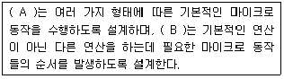
- A: 제어장치, B: 연산장치
- A: 연산장치, B: 제어장치
- A: 입력장치, B: 연산장치
- A: 제어장치, B: 레지스터
(정답률: 66%)
3과목: 마이크로전자계산기
41. PSW(Program Status Word)가 사용되지 않는 것은?
- 인터럽트(Interrupt)의 처리
- CPU의 로딩(Loading)
- 어드레스의 선택
- CPU와 I/O의 통신
(정답률: 26%)
42. 연산을 위하여 누산기(accumulator)를 사용하여 수행하는 명령어 형식은?
- 0-주소 형식
- 1-주소 형식
- 2-주소 형식
- 3-주소 형식
(정답률: 71%)
43. 로더(loader)의 설명으로 옳은 것은?
- symbol 언어로 작상된 프로그램을 기계어로 바꾸어 주는 동작
- 목적 프로그램(Object Program)을 실행하기 위해 메모리에 적재하는 역할을 수행하는 시스템 프로그램
- 운영체제를 구성하는 각종 프로그램들을 종류와 특성에 따라 구분하여 보관해 두는 기억영역
- 어떤 데이터 기억매체로부터 다른 기억매체로 전송 또는 복사하는 프로그램
(정답률: 69%)
44. BASIC과 같이 고급 언어로 작성된 소스 프로그램을 한 단계Tlr 기계어로 해석하여 실행하는 언어처리 프로그램은?
- 로더(Loader)
- 인터프리터(Interpreter)
- 어셈블러(Assembler)
- 기계어(Machine Language)
(정답률: 66%)
45. 표(Table) 형식의 자료를 처리하고자 할 때 가장 유용하게 사용할 수 있는 명령어의 어드레스 지정 방식은?
- 상대 어드레스 지정 방식
- 인덱스 어드레스 지정 방식
- 절대 어드레스 지정 방식
- 함축 어드레스 지정 방식
(정답률: 45%)
46. 다음 [그림]은 마이크로컴퓨터의 ROM(read only memory)을 나타낸 것이다. 각 핀의 상태를 기준으로 할 때 메모리의 최대 용량은 얼마인가?
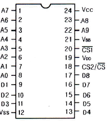
- 1024 × 8(bit)
- 512 × 16(bit)
- 2048 × 8(bit)
- 256 × 16(bit)
(정답률: 50%)
47. 핸드세이킹(Handshaking)의 설명 중 틀린 것은?
- 하나의 제어선만 필요하다.
- 비동기 자료 전송 방법에 속한다.
- 스트로브(strobe) 제어보다 개선된 방법이다.
- 자료 전송률은 속도가 느린 장치에 의해서 결정된다.
(정답률: 54%)
48. two-pass 어셈블러의 second pass에서 수행하는 일이 아닌 것은?
- object code를 생성한다.
- symbol table을 작성한다.
- source와 object code의 리스트를 작성한다.
- error list를 작성한다.
(정답률: 25%)
49. 그림과 같은 Common Cathode 타입의 7-Segment에 숫자 "2"를 출력하기 위한 신호로 옳은 것은?
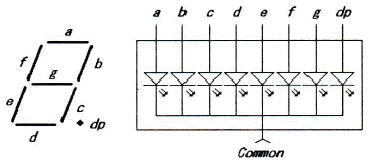
- a, b, d, e, g는 "0", c, f, dp는 "1"을 출력하고 Common 단자에 "1"을 출력
- a, b, d, e, g는 "0", c, f, dp는 "1"을 출력하고 Common 단자에 "0"을 출력
- a, b, d, e, g는 "1", c, f, dp는 "0"을 출력하고 Common 단자에 "1"을 출력
- a, b, d, e, g는 "1", c, f, dp는 "0"을 출력하고 Common 단자에 "0"을 출력
(정답률: 44%)
50. 명령어에서 op-code 다음에 실제 오퍼랜드(operand) 값이 오는 주소지정방식은?
- direct addressing
- immediate addressing
- implied addressing
- indexed addressing
(정답률: 31%)
51. RISC에 대한 설명으로 틀린 것은?
- 컴퓨터에서 사용되는 명령어의 수를 줄임으로서 하드웨어를 단순화시키고 시스템 성능을 더욱 개선한 컴퓨터 구조 기술이다.
- CISC에 비해 명령어 형식이 다양하다.
- 대부분 제어 메모리가 없는 하드 와이어 제어방식을 사용한다.
- 명령어 수행은 하드웨어에 의해 직접 실행된다.
(정답률: 52%)
52. 인터페이스 버스가 세션 핸드셰이킹(handshaking) 방식을 사용할 때 사용하는 신호가 아닌 것은?
- DAV 신호
- FRD 신호
- DAC 신호
- START 신호
(정답률: 49%)
53. Memory-Mapped I/O 방법과 Isolated I/O 방법을 설명한 것 중 틀린 것은?
- Isolated I/O 방법이 같은 조건에서 기억 공간이 넓다.
- Memory-Mapped I/O의 방법에서는 특별한 I/O 명령어가 없어도 된다.
- Isolated I/O 방법에서는 I/O interface register 주소가 별도로 마련된다.
- Isolated I/O 방식은 interrupt 처리가 용이하다.
(정답률: 23%)
54. 마이크로컴퓨터에서 병렬 입출력 인터페이스가 아닌 것은?
- PIO
- PPI
- ACIA
- PIA
(정답률: 45%)
55. DMA의 입출력 방식과 관계없는 것은?
- DMA 제어기가 필요하다.
- CPU의 계속적인 간섭이 필요하다.
- 비교적 속도가 빠른 입출력 방식이다.
- 기억장치와 주변장치 사이에 직접적인 자료 전송을 제공한다.
(정답률: 70%)
56. 마이크로프로세서의 처리능력(performance)과 가장 관계가 적은 것은?
- clock frequency
- data bus width
- addressing mode
- software compatibility
(정답률: 47%)
57. 다음 중 USART를 제어하기 위한 레지스터가 아닌 것은?
- USART I/O 데이터 레지스터
- USART 타이머 레지스터
- USART 보레이트 레지스터
- USART 제어 상태 레지스터
(정답률: 38%)
58. 연산장치(ALU)의 기능이 아닌 것은?
- 가산을 한다.
- AND 동작을 한다.
- complement 동작을 한다.
- PC(프로그램카운터)를 1만큼 증가시킨다.
(정답률: 59%)
59. 주기억장치의 한 영역으로 입출력 장치와 프로그램이 데이터를 주고받을 때 중간에서 데이터를 임시로 저장하는 레지스터는?
- Index 레지스터
- Address 레지스터
- Shift 레지스터
- Buffer 레지스터
(정답률: 70%)
60. 객체 지향 프로그래밍의 설명으로 틀린 것은?
- 유지보수의 용이성
- 모든 언어에 적용 가능
- 소프트웨어 개발에 따른 비용 감소로 생산성 향상
- 새로운 기능이나 객체들의 추가가 쉬운 확장 용이성
(정답률: 57%)
4과목: 논리회로
61. 입력 어드레스 라인 12개, 출력 데이터 라인 8개인 EPROM의 기억 용량은 몇 바이트(byte)인가?
- 512
- 1024
- 2048
- 4096
(정답률: 46%)
62. 2진수 "1111"의 2의 보수(2's complement)는?
- 0000
- 0001
- 1111
- 1110
(정답률: 75%)
63. JK 플립플롭의 J 입력과 K 입력을 하나로 연결하면 어떤 플립플롭의 동작을 하는가?
- D 플립플롭
- T 플립플롭
- M/S 플립플롭
- RS 플립플롭
(정답률: 60%)
64. 워드 크기가 16비트, 누산기의 크기가 8비트, 메모리 어드레스 관리자(MAR)의 크기가 12비트, 데이터 레지스터의 크기가 20비트인 시스템의 최대 주기억장치의 크기는 몇 워드(word)인가?
- 220
- 216
- 212
- 28
(정답률: 32%)
65. 일반적인 형태의 동기식 카운터와 비동기식 카운터에 관한 내용으로 잘못된 것은?
- 비동기식카운터는 앞단의 출력이 다음 단으로 전달되는 식의 동작을 하므로 동기식에 비해 늦다.
- 동기식은 클록신호가 각 플립플롭에 동시에 인가되므로 고속 카운터회로 구현에 이용된다.
- 동기식 카운터는 리플카운터보다는 늦고 복잡하므로 구현하기 어렵다.
- 최종 플립플롭의 보수 출력(Q)을 처음 플립플롭의 입력으로 인가하여 순환되는 형태의 시프트카운터를 존슨(Johnson) 카운터라고 한다.
(정답률: 58%)
66. 비안정 멀티바이브레이터로 사용되는 소자는?
- 555
- 741
- 7408
- 7432
(정답률: 50%)
67. 10진수 59를 BCD 코드(8421 코드)로 인코딩하면?
- 1000 1100
- 0101 1001
- 0011 1011
- 0101 0111
(정답률: 69%)
68. 다음 소자 중에서 ROM과 유사한 성격을 가지며, AND array와 OR array로 구성된 것은?
- PLA
- Shift Register
- RAM
- LSI
(정답률: 74%)
69. 어느 게이트의 진리표 일부가 다음과 같을 때 이 진리표에 부합될 수 있는 게이트는?
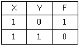
- AND와 OR
- XOR과 NAND
- XOR과 NOR
- OR와 NOR
(정답률: 65%)
70. 6비트 D/A 변환기의 백분율(%) 분해능은?
- 0.976
- 1.59
- 1.75
- 0.392
(정답률: 23%)
71. 다음 회로의 논리식은?
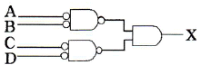
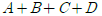
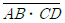
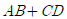
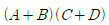
(정답률: 55%)
72. 8421코드에서 입력 ABCD가 1001일 때만 출력이 1인 경우에 해당하는 것은? (단, 8421 코드에서 사용되지 않는 상태는 don't care로 간주한다.)
- AD'+BC'
- AD
- AC+BD
- BD'
(정답률: 58%)
73. XY + X'Z + YZ를 간략화한 것으로 맞는 것은?
- X+Y+Z
- ZY+X'Z
- XY+XY
- XYZ
(정답률: 44%)
74. 플립플롭에서 현재상태와 다음 상태를 알 때 플립플롭에 어떤 입력을 넣어야 하는가를 나타내는 표는 무엇인가?
- 진리표
- 여기표
- 순차표
- 상태표
(정답률: 66%)
75. 10진수 89를 기수 패리티(Odd Parity) 비트를 사용하는 3초과 코드(Excess-3 Code)로 코딩한 것으로 옳은 것은?
- 11001 10110
- 10000 10011
- 10110 11001
- 10110 11000
(정답률: 38%)
76. 다음 회로도의 A 값이 1100이고, B 값이 0001일때 출력 F의 값은?
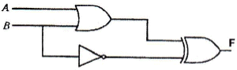
- 0011
- 1100
- 1101
- 1011
(정답률: 50%)
77. 어떤 플립플롭의 전파 지연 시간(propagation delay)이 50[ns]라고 하면 이 플립플롭이 정상적인 동작을 하도록 인가할 수 있는 클록의 최대 주파수는 몇 [MHz]인가?
- 5
- 10
- 20
- 50
(정답률: 43%)
78. A와 B가 입력일 때 반감산기에서 자리 내림수의 기능은?
- A'⋅B'
- (A⋅B)'
- A'+B
- A'⋅B
(정답률: 37%)
79. 다음과 같이 동작하는 소자는?
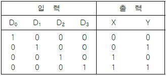
- 인코더
- 디코더
- MUX
- DEMUX
(정답률: 59%)
80. 다음 논리회로의 출력식은?
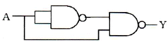
- Y=A
- Y=A'
- Y=1
- Y=0
(정답률: 40%)
5과목: 데이터통신
81. 에러(error) 정정이 가능한 코드는?
- Hamming 코드
- CRC 코드
- ASCII 코드
- EBCDIC 코드
(정답률: 66%)
82. 불균형적인 멀티포인트 링크 구성 중 주 스테이션이 각 부 스테이션에게 데이터 전송을 요청하는 회선 제어 방식은?
- Contention 방식
- Polling 방식
- Select Hold 방식
- Point to Point 방식
(정답률: 53%)
83. 다음이 설명하고 있는 것은?
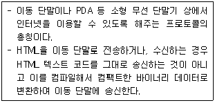
- HTTP
- FTP
- SMTP
- WAP
(정답률: 61%)
84. OSI-7 계층 중 응용 process 간의 대화 단위나 전송방향을 결정하는 것은?
- Data Link Layer
- Network Layer
- Transport Layer
- Session Layer
(정답률: 54%)
85. HDLC를 기반으로 하며, ISDN의 D채널을 위한 링크 제어 프로토콜로 사용되는 것은?
- LAP-B
- LAP-M
- LAP-D
- LLC
(정답률: 72%)
86. 패킷 교환에서 가상회선 방식에 비해 데이터그램 방식이 갖는 장점으로 틀린 것은?
- 패킷이 동일한 경로로 전달되므로 항상 송신된 순서대로 수신이 보장된다.
- 호 설정 과정이 없기 때문에 몇 개의 패킷으로 된 짧은 메시지를 전송할 경우 훨씬 빠르다.
- 망의 혼잡 상황에 따라 적절한 경로로 패킷을 전달할 수 있으므로 융통성이 크다.
- 한 노드가 고장 나면, 이 노드를 경유하는 가상 회선이 두절되는데 비해 데이터 그램 방식은 우회 경로로 패킷을 전달할 수 있으므로 신뢰성이 높다.
(정답률: 46%)
87. TCP/IP 프로토콜의 구조에 해당하지 않는 계층은?
- Physical Layer
- Application Layer
- Session Layer
- Transport Layer
(정답률: 68%)
88. 다음이 설명하고 있는 디지털 신호 부호화 방식은?
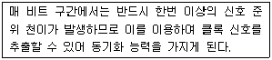
- NRZ-L
- TTL
- Manchester
- TDM
(정답률: 74%)
89. 데이터 링크 제어 프로토콜 중 PPP(Point to Point Protocol)에 대한 설명으로 틀린 것은?
- 전송된 데이터의 오류 검출과 복구 기능을 제공한다.
- 인터넷 접속에 사용되는 IETF의 표준 프로토콜이다.
- 점대점 링크를 통하여 IP 캡슐화를 제공한다.
- LCP와 NCP를 통하여 많은 유용한 기능들을 제공한다.
(정답률: 56%)
90. 다음 중 라우팅(routing) 프로토콜에 해당하지 않은 것은?
- BGP(Border Gateway Protocol)
- OSPF(Open Shortest Path First)
- SNMP(Simple Network Management Protocol)
- RIP(Routing Information Protocol)
(정답률: 72%)
91. 데이터 전송방식 중 전송할 데이터를 블록(block) 단위로 전송하는 것은?
- 비동기 전송
- 동기 전송
- 시리얼 전송
- 페러럴 전송
(정답률: 50%)
92. GO-Back-N ARQ에서 5번째 프레임까지 전송하였는데 수신측에서 2번째 프레임에 오류가 있다고 재전송을 요청해 왔다. 재전송 되는 프레임의 개수는?
- 1개
- 2개
- 3개
- 4개
(정답률: 74%)
93. 각 블록의 시작이나 끝에 삽입되는 전송제어 문자로 틀린 것은?
- ETX
- SYN
- SOH
- ACK
(정답률: 55%)
94. HDLC 링크 구성 방식에 따른 동작 모드에 해당하지 않는 것은?
- 정규 응답 모드(NRM)
- 비동기 응답 모드(ARM)
- 비동기 균형 모드(ABM)
- 정규 균형 모드(NBM)
(정답률: 66%)
95. 네트워크에 연결된 시스템은 논리주소를 가지고 있으며, 이 논리주소를 물리주소로 변환시켜 주는 프로토콜은?
- RARP
- NAR
- PVC
- ARP
(정답률: 65%)
96. 다음이 설명하고 있는 것은?
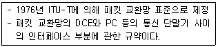
- X.21
- X.28
- X.25
- X.29
(정답률: 74%)
97. IPv4와 IPv6의 패킷 헤더의 비교 설명으로 틀린 것은?
- IPv4의 프로토콜 필드는 IPv6에서 트래픽 클래스(Traffic Class) 필드로 대치된다.
- IPv4의 TTl 필드는 IPv6에서 홉 제한(Hop Limit)으로 불린다.
- IPv4의 옵션 필드(Option Field)는 IPv6에서는 확장 헤더로 구현된다.
- IPv4의 총 길이 필드는 IPv6에서 제거되고 페이로드 길이 필드로 대치된다.
(정답률: 42%)
98. 다음 ( ) 안에 들어갈 알맞은 용어는?
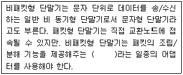
- NPT
- PT
- PAD
- PMX
(정답률: 77%)
99. 패킷교환망의 경로 배정 중 각 노드에 들어오는 패킷을 도착된 링크를 제외한 다른 모든 링크로 복사하여 전송하는 방식은?
- Flooding
- Random Routing
- Fixed Routing
- Adaptive Routing
(정답률: 80%)
100. 아날로그 데이터를 디지털 신호로 변환하는 과정에 해당하지 않는 것은?
- 표본화
- 복호화
- 부호화
- 양자화
(정답률: 74%)